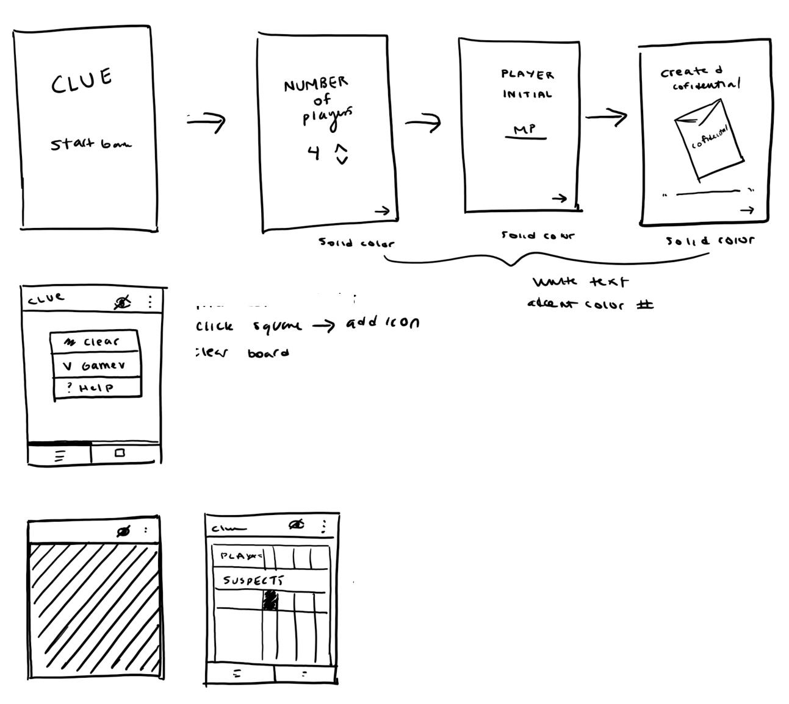
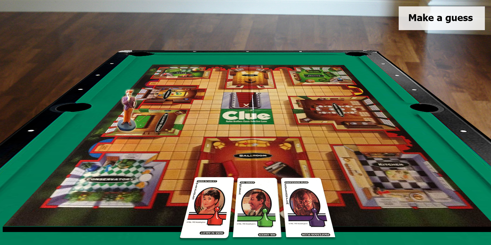
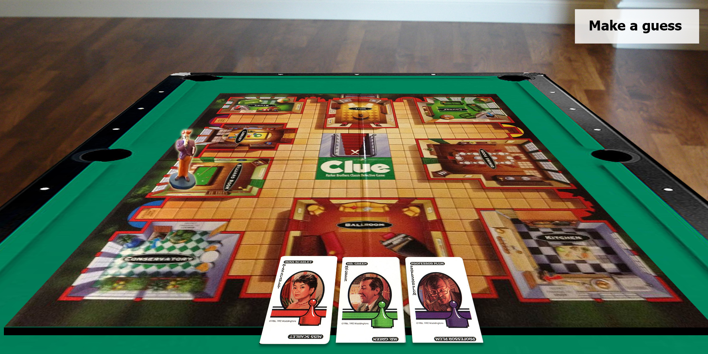
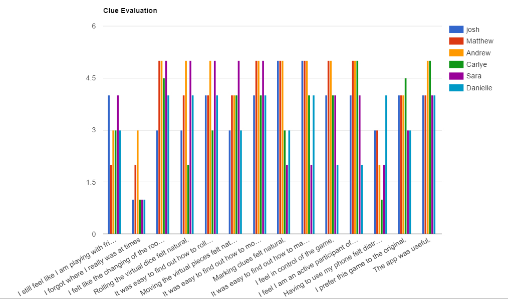

| Name | Role |
|---|---|
| Jason Barret | Project Manager |
| Aaron Newman | Design Lead |
| Toby Pancione | Research Lead |
| Monil Patel | Reporting Lead |
| Tommy Hyres | Prototyping Lead |
| Brandon Bradley | Evaluation Lead |
System Concept Statment
Clue 2.0 will be a modern day upgrade to the classic board game of clue, providing a new, immersive experience by making use of current day technologies. By utilizing virtual reality and a companion smartphone application to keep track of the players’ clues, cards, and pieces, the game is brought to new heights. Compared to the current form of the game, Clue 2.0 will offer an innovative digital experience while reducing the time and setup required to play the game and remove the need for the small paper notebooks. This upgrade will alleviate all the old aches and pains of losing game pieces, writing down illegible notes, and the classic general mistrust of friends in a game built upon deceit. A focus on immersive design will emphasis the detective quality of the classic board game while offering friends and family between the age of 8 and 30 new and exciting way to play a game that they already love. The introduction of technology into this board game will bring Clue back into popularity with those who have moved on towards more digital forms of entertainment.
Scope of Prototype/Evaluation
After speaking with our client and Wallace, we decided to focus our prototype and evaluation to the idea of more immersive experience. Specifically we wanted to gather data and feedback over how users felt about a new version of the classic board game without physical pieces and if the additions and changes that we made actually accomplish our goal.
Prototype: Justification
Coverage
We decided on creating a horizontal prototype, one that would cover the core aspects to the board game. We thought it was important to evaluate the users on the main tasks needed to play the game, including set-up, marking off suspects, rolling dice, and moving pieces. A main reason for not doing a vertical prototype is the fact that our design concept incorporates a lot of automation between the VR Headset and the companion app which would be hard to prototype given the scope and time constraints of this class.
Fidelity
Ultimately we created a medium to high fidelity prototype. Medium in the sense that the options for interaction are limited due to the difficulty of translating all options of a board game to a prototype. High with respect to the look and feel of the app. We wanted to give the users a sense that this was a real product. For this reason we worked to create a sleek design with a brand consistant with the classic board game and created visual images that shows the user what they would be seeing through the headset. These VR visual mock-up were used to show the user how the environment would change based off of the position in the game and how the display would show relevent information at a given time. The use of these mock-ups allowed us to protoype for the ecological perspective. Because this new form of the game depends on both the companion app and the VR headset we determined that the prototype would need to show the users both technology and how they interact.
Interactivty
We decided on a medium-fidelity click through approach. This seemed like the fastest way to obtain a interactive prototype while keeping a high-fidelity visual feel to the overal application. In order to prototype for the interaction perspective we started with our wireframes created in Phase 2 and fleshed out the basic sequence and flow of the app. One important note is that due to the large number of options avaliable to a player during their turn we had to use a more scripted approach for our evalution and prototype. This means that at certain screens there are limitations in the prototype in order to keep each evalution consistent. This scripted approach is shown below in the Test Script Section.
Prototype: Process
We started with the wireframes we designed in the last phase, however as a team we revaluated the basic flow of those designs and made minor changes to the button placement and icon choice. From this team evaluation we also decided to add the process of setting up the game into the prototype. We actually took a step back and remade some quick sketches to make sure we understood how the user would walk through the app. These were quick sketches that just help our team understand the basic flow of the app and for us to brainstorm various options for how the app could look and function. We then discussed the scope of the prototype including, coverage, interactivity, and fidelity as listed above. One thing we discussed with Stephen was to create visual mock-ups of what the VR headset would show. These images were realistic images that would give the user a sense of how the heads up display would function, and how the environment could change as you move to different rooms in the board game. This gave the users a first person view of what they would be seeing if the VR headset actually existed.
Started working on the prototype using a service called MarvelApp. Essentially it works by creating images of our app in Photoshop and then adding “link boxes” to the areas on the screen that the user can interact with and then linking those “link boxes” to the corresponding screen. This creates the illusion that the user can actually interact with the elements on the screen.
We wanted to create a visual brand to the game that was consistent with the boardgame. One way we did this was by first coming up with a consistent color scheme. We took inspiration from the classic board games box art and chose colors that would keep the games light and fun feel. We added various graphic design elements such as fingerprints and shadows to keep the detective feel of the game consistent throughout.
As we developed the prototype we continuously tried testing it on our phones in order to see what needed to be fixed and what could be changed. We found slight errors and with the animations and saw that some of our “link boxes” needed to be bigger so that the user could actually click on it. Our team wanted to make the user feel like this was a real application, another way we did this was to add fake “loading screens” to the initial set up process. This was used as a way to make the user feel like the app was actually doing work such as connecting to the other players or finalizing the setup of the game. In order to get this feel we added a timer to those specific screens and restricted the ability to move to the next screen for about 2 seconds
After our initial meeting with Wallace and Stephen, we made subtle changes to how the user could interact with the prototype. Wallace pointed out that there should maybe be a way to swipe through the initial setup process screens instead of strictly relying on the back and next buttons located on the bottom. After this meeting we took note of the things they recommended and made the necessary changes to the prototype.
As we completed the newly created set up screens, we essentially were able to keep the same wire frames that were created for the detective sheet. From our internal testing we found that the two button bottom navigation gave quick and easy access to both screens. We placed the additional “hide sheet” and settings button on the top menu bar. We decided on this placement and icons because we thought users would expect a settings button to represent additional options and an eye icon to represent the visibility of the screen.
As we tested the prototype we actually came up with additional functionality that we thought would improve the game. One of these was the idea of hiding the detective sheets in order to prevent cheating among the players. The idea was to create a “shade” that could block your detective notes so that other players wouldn't be able to see which suspects you have eliminated.
Companion App Prototype: Click to interact!
Note: Due to limitations of the prototyping tool we had to limit certain interactions. Please take a look at our Test-Script to see what the prototype supports.
VR Headset Mockups
 

Evaluation Plan
After meeting with Stephen and Wallace, we decided that the best way for us to perform empirical evaluation was through the RITE plan. Our main metric from Phase 2 was to measure average time on task. After this meeting we understood that our ux metrics from Phase 2 were not a good representative for our project and what we really wanted to learn from this evalution. Our main concept with this new form of Clue was that we wanted it to become more immersive. We wanted to make the game easier, faster and more fun to play with the use of the VR headset and the app. We understood that simply figuring out the average time of completion of a task was not going to help us answer this question. From here we took the advice of Wallace to ask the user a series of statements and have them answer on a scale from 1 (strongly disagree) to 5 (strongly agree). By using this scale we can see how users feel about the modifications that we have made to the classic board game. From the book we followed the process of preparation outline for the RITE plan.
Identifying the characteristics needed in participants
One constraint we faced with the type of participant was the age range. In Phase 2 we had decided on a target audience of a young child, around the age of 7. However due to the time constaints and scope of this project we decided to use our next intended audience which were college age students.
Identifying tasks
Critical Tasks
- Set up the game
- Eliminate the suspects they have cards for (mark on detective sheet)
- Roll dice
- Move a piece
- Make a Guess
- Clearing the detective sheet
Other Tasks
- Hiding the detective sheet (opening shade)
Constructing Test Script
This link is provided in case you want to follow the test script as you use the prototype above!
Collecting Qualitative User Behavior Data
Following Wallace's advice we decided on collecting user data through a 1 (strongly disagree) - 5 (strongly agree) scale. We came up with a list of statements that we felt would give us feedback on the changes and additions we made to the game. We were specifically looking to see how the users felt about the lack of physical pieces, the need to use their phone all the time, and if the VR headset and companion app really helped immerse the user in the game or made them more distracted. We felt that the statements below would help lead us to determining if our system met our goal of making Clue more immersive. As we evaluated the user we also took notes of what they said as they thought allowed throughout each task. Because this evaluation was more scripted we felt that it would be in our best interest to understand how the user felt about a particular action as they made it. Ultimately we ended up having 6 evaluation sessions all of which ranging from 10-15 minutes. The students were found at various study places around campus such as the CS Lounge, NCB and the library and all of which were happy to volunteer for the evaluation. We followed the test script shown above in order to keep a structure evaluation throughout each study. Shown below are observations and the data from the session, including what the user.
Observations/Talk aloud
Results
| josh | Matthew | Andrew | Carlye | Sara | Danielle | average rating for task | |
|---|---|---|---|---|---|---|---|
| I still feel like I am playing with friends | 4 | 2 | 3 | 3 | 4 | 3 | 3.166666667 |
| I forgot where I really was at times | 1 | 2 | 3 | 1 | 1 | 1 | 1.5 |
| I felt like the changing of the rooms enhanced the experience | 3 | 5 | 5 | 4.5 | 5 | 4 | 4.416666667 |
| Rolling the virtual dice felt natural. | 3 | 4 | 5 | 2 | 5 | 4 | 3.833333333 |
| It was easy to find out how to roll the virtual dice. | 4 | 4 | 5 | 3 | 5 | 4 | 4.166666667 |
| Moving the virtual pieces felt natural. | 3 | 4 | 4 | 4 | 5 | 3 | 3.833333333 |
| It was easy to find out how to move the pieces. | 4 | 5 | 5 | 4 | 5 | 4 | 4.5 |
| Marking clues felt natural. | 5 | 5 | 5 | 3 | 2 | 3 | 3.833333333 |
| It was easy to find out how to mark notes. | 5 | 5 | 5 | 4 | 2 | 4 | 4.166666667 |
| I feel in control of the game. | 4 | 5 | 5 | 4 | 4 | 2 | 4 |
| I feel I am an active participant of the game. | 4 | 5 | 5 | 5 | 4 | 2 | 4.166666667 |
| Having to use my phone felt distracting. | 3 | 3 | 2 | 1 | 2 | 4 | 2.5 |
| I prefer this game to the original. | 4 | 4 | 4 | 4.5 | 3 | 3 | 3.75 |
| The app was useful. | 4 | 4 | 5 | 5 | 4 | 4 | 4.333333333 |
| average rating for each user | 3.642857143 | 4.071428571 | 4.357142857 | 3.428571429 | 3.642857143 | 3.214285714 |
Result Graph
